[SVG Icon]
[SVG Icon]
[SVG Icon]
孖仔帮
公众号ID：twinsbang
关注
文|圆圈妈
网图|侵删
[SVG Icon]
[SVG Icon]
等双胞胎1岁后就会好带一点了吗?
是的！亲测的确如此！
我问你，养育双胞胎让人最崩溃的是什么？
对，双胞胎的睡觉问题！
那我再问你，这问题要是能解决，是不是觉得好带很多？
嗯，还真的是哦！
《双胞胎睡眠圣经》一书中提到，除非你的双胞胎孩子很早就提前出生，否则等孩子长到 1~2岁，早产对他们身体带来的影响应该全部消失，他们应该和正常出生的孩子没什么不同。
所以你应该以他们出生的时间作为标准来计算他们的年龄，而不是按照预产期的时间来计算年龄。
1~2岁的孩子在一天24小时内需要有14个小时左右的睡眠。大部分家长表示他们的双胞胎在1岁的时候每天晚上大概睡11.5个小时，白天大约睡2.5个小时。
这意味着，即便再怎么睡渣，绝大多数双胞胎宝宝们到了1岁后，基本上都能美美的睡个整夜觉，因为他们的生物钟机能已经发育形成并逐渐趋向成熟，那些半夜啼哭，整夜不睡，昼夜颠倒的现象会越来越少。
而且只要你足够耐心和细心，你还能根据每个宝宝的不同生物钟，对他们的睡眠作息摸出个大概，并做出适当的调整，以平衡其他家庭成员的睡眠需求。
正所谓「得他者，得天下」，在我们的双胞胎育儿界，也是这个理，不同的是，这个「他」指的是，掌握了双胞胎的睡眠规律，妈妈们即可高枕无忧，岁月静好。
如果你们家双胞胎已经1岁多，而你依然在调整他们的睡眠作息上水深火热无法自拔，那你真的要好好想想到底哪里出问题了，是时候转变下策略了。
《双胞胎睡眠圣经》中提到的一些小窍门，你可以参考下！
在孩子满1周岁之前，大约 80%的孩子在白天会睡两次。到了15个月的时候，大约 40%的孩子依然会每天睡两次。到了21个月的时候，只有大约10%的孩子会依然保持白天睡两次的习惯。
当双胞胎长到1岁左右(12个月到15个月)，你可以开始帮助他们逐渐过渡到一天只睡一次。在这个过程中，你可以继续让他们每天睡两次，即使你强烈怀疑或者知道双胞胎的其中之一在第二觉的时候并不好好睡或者只能睡一小会 。
还有一个小窍门就是，把他们晚上睡觉的时间提前一点，这样做可以补充一些白天缺失的睡眠，保证第二天醒来时候的充沛精力，同时也会自然而然缩短早上的小睡时间。
另一种方法就是，一点点推迟早上睡觉的时间，最终把两次的小睡时间重合在一起，使孩子一天只睡一次午觉。
如果你的一个宝宝比较嗜睡，一天仍需要睡两觉，而另一个不需要那么多睡眠，一天睡一次午觉已经足够，而你希望他们俩能保持同步的作息时间，也就是说一天只睡一次午觉，那么这个过渡的过程差不多要持续一个月的时间。
当孩子长到2岁的时候，他们的睡眠时间，尤其是白天小憩的时间会变短。以前在白天的时候他们会睡两觉(早晨和上午10点左右)，慢慢变成只睡一次午觉。
如果你的双胞胎接近两岁（15~21个月)，那么你可能需要采取一些强制性手段使他们一天只睡一次午觉,即使两个孩子中的一个在早晨的时候仍然迷迷糊糊。
也就是在这个阶段，异卵双胞胎的生物睡眠差异会表现得非常明显。事实上,从白天睡两觉过渡到只睡一觉对异卵双胞胎尤其困难，因为他们进行和完成过渡的时间并不一致。
如果是同卵双胞胎，睡眠过渡这件事对父母来说易如反掌，因为基因决定人的生物钟，同卵双胞胎的基因相同，那么他们的生物钟也保持相同或者形似。
如果有很多人来帮助你照顾双胞胎，那么两个孩子可以有完全不同的作息时间。但是当你找不到帮手，需要一个人照顾两个孩子的时候，即使一个孩子一天睡两次更能满足他的睡眠需求，大部分家庭还是会选择让两个孩子一天只睡一次午觉。
在开始帮助双胞胎过渡的前几天，你可以通过他们在下午4~5点的表现来判断他们是否得到了充足的睡眠。
下午4~5点是“魔法时间”。
如果两个人在4~5点表现得精力充沛，那说明他们得到了充足的睡眠；如果他们表现得很烦躁，那说明他们缺乏睡眠。
如果你觉得这书上说的可信度不高，那我来说说我的情况，你会发现：孩子的成长自有规律，是个自然而然循序渐进的过程。
正如西尔斯所言：宝宝终有一天会断奶，终有一天会睡整觉，这种高需求的育儿阶段很快就会过去。宝宝在你床上的时间，在你怀里吃奶的时间，在人的一生里都非常短暂，但是那些爱与信任的记忆，则会持续一生。
圆圈兄弟从月子里就是睡渣两枚，昼夜颠倒，一个睡另一个醒，哄完一个又一个，从来不同步。我们试过很多办法都无济于事，真的是硬生生地熬到了他们1岁，具体应该是从10月龄开始，圆圈的连续睡眠时间从刚开始的3小时，延长到5小时，再到7小时，甚至9小时...
1岁后，他们的睡眠时间出现了质的飞跃，他们总能制造出很多惊喜给我们，比如放床上才一会儿，突然间就秒睡了，或者一觉睡到大清早，中间未曾醒过！
当然，一觉睡到天亮并不是说他们每天都会这样安静地睡个整觉。
有时他们会在应该睡觉的时间哼唧一会儿；有时他们会半夜醒来哭闹一阵子或者干脆爬起来跟我抢枕头，让人哭笑不得。
明明娘仨各自睡一个角落相安无事，结果一觉醒来，发现两个娃都横七竖八地挤在我的枕头上了。
我睡的枕头太高太硬，担心伤到他们脆弱娇嫩的颈椎，一个晚上总要醒来好几次，把他们哥俩从我的枕头上挪开。
为此，我还特意在某宝买了两个婴幼儿专用枕芯给他们，但他们睡不习惯，睡到后半夜仍然会像磁铁一样不自觉地睡到我身边，左右夹攻把我挤成一团，霸占了枕头的半壁江山。
在圆圈1岁5个月时，我去香港背奶粉时顺便给他们买了一对海马牌的记忆棉枕，没想到这小枕头，大作用，彻底终结了我们娘仨的抢枕头大战。
果然，小孩子很诚实，没有习不习惯，只有喜不喜欢，买对枕头才是硬道理。
他们非常喜欢这只柔软Q弹的小枕头，摸起来软软的，手感很舒服，很有弹性.。
已关注
关注
重播 分享 赞
关闭
观看更多
更多
退出全屏
[SVG Icon][SVG Icon][SVG Icon][SVG Icon]切换到竖屏全屏退出全屏孖仔帮已关注
分享视频
，时长00:06
0/0
00:00/00:06
切换到横屏模式
继续播放
进度条，百分之0
播放
00:00
/00:06
00:06
倍速
全屏
倍速播放中
0.5倍 0.75倍 1.0倍 1.5倍 2.0倍
超清 流畅
您的浏览器不支持 video 标签
继续观看
「等双胞胎1岁后就会好带一点了」这是真的吗？
观看更多
转载
,
「等双胞胎1岁后就会好带一点了」这是真的吗？
孖仔帮已关注
分享点赞在看
已同步到看一看写下你的评论
视频详情
每天晚上都要小枕头垫着才肯睡，而且睡眠质量也比之前好很多了，再也不会莫名其妙地夜半啼哭，最重要的是，我终于不用担心有人跟我抢枕头了。
一人带睡双胞胎的妈妈们，若是你的双胞胎满1岁，经常被两个娃抢枕头睡，那别纠结了，赶紧给孩子们准备枕头吧，一款合适的儿童枕头会给双胞胎的睡眠调整之路助力不少，帮助孩子们安睡整晚。
这款记忆棉枕，圆圈从小童款开始睡到现在的中大童款，一直都在使用中。
@圆圈兄弟，6岁＋，买的上下床，但他们总是习惯把枕头排成一排，睡在一起，摆着一模一样的睡姿。呵，要是白天也能这么和谐该多好啊！
超适合1-6岁的孩子，材质安全无毒、过敏风险低、质地柔软细腻、透气性强、吸湿性好。
还有香港卓越品牌做背书，影视红星汪明荃倾情代言30多年，有口皆碑，质量信得过。
[SVG Icon]
只要群里有妈妈求问儿童枕，我都会给她们推荐这款海马牌的记忆棉枕。
@飞天小女警|来自我们双胞胎社群资深育儿达人的分享↓↓
现在，我跟品牌方争取到了比双11还划算的权益，有需要购买儿童枕的妈妈们可打开下面淘口令，领取孖仔帮读者专属优惠！
别犹豫啦！是时候治一治那两只老是抢你枕头的混世小魔王了哈。
- 孖仔帮读者优惠 -
【香港海马牌MEM记忆枕儿童款】
原价199元一只
双11活动到手价99元一对（仅限小童款）
- 如何购买小枕头 -
①复制下方淘口令↓↓
29嘻去为年去他可子了学么时啊
② 打开手淘APP，静候1-5秒
③跳出链接后，点击【打开】
④进入宝贝链接，选中【中小童款】，添加购物车，提交订单
⑤联系客服改价，报暗号【孖仔帮】
注：
不可与店里优惠叠加
其他详情可咨询在线客服
如果淘口令打不开，你还可以这样操作↓↓
①保存下方图片到相册
②打开手淘APP
③通过【扫一扫】
④打开图片即可进入宝贝页面
若还是打不开淘口令，
也可以点击左下方的【阅读原文】
万一，我说的是万一，以上方法都使不得
别着急！
还有小助手在
请添加微信twinsbang1
阅读原文

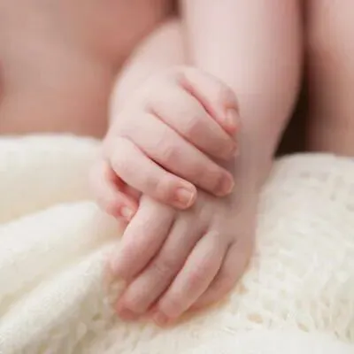
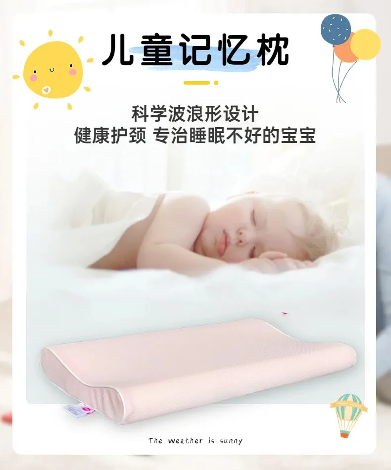
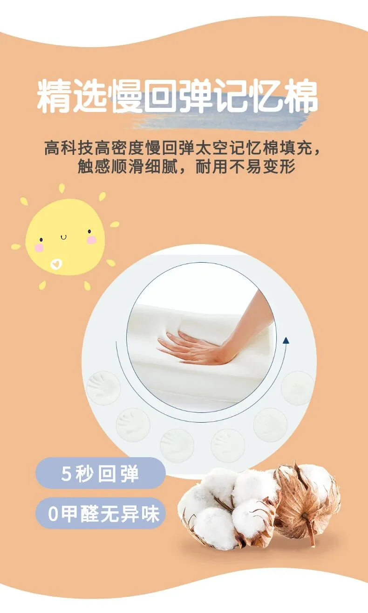
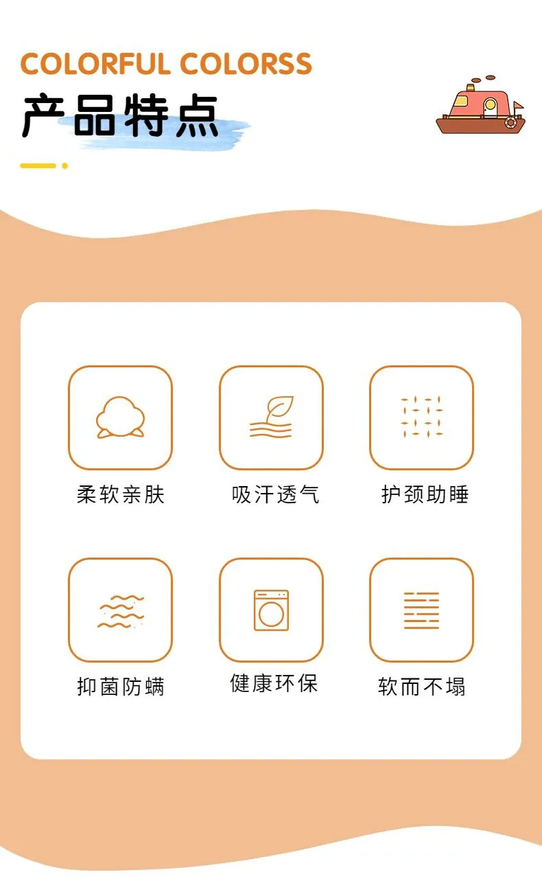
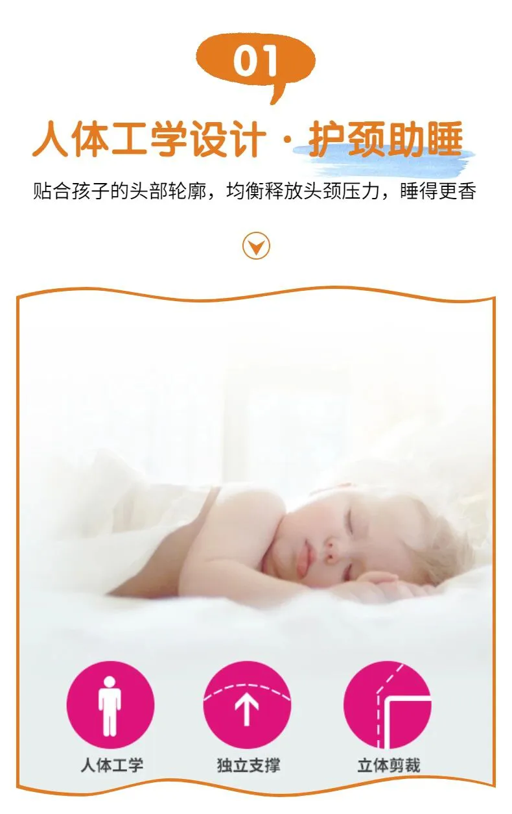
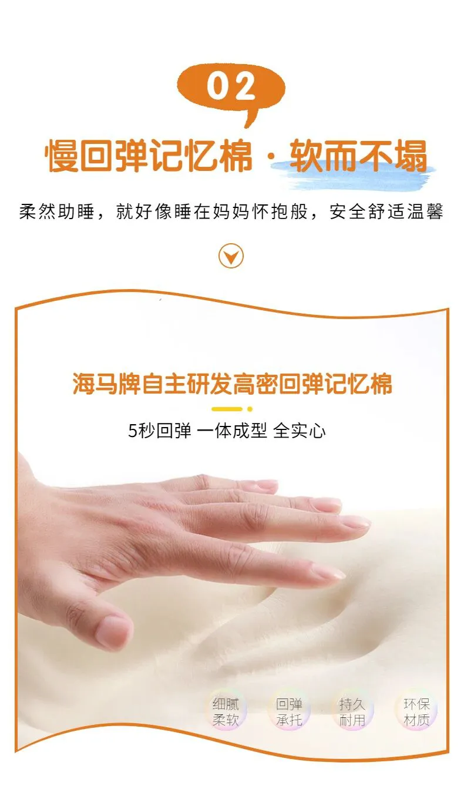
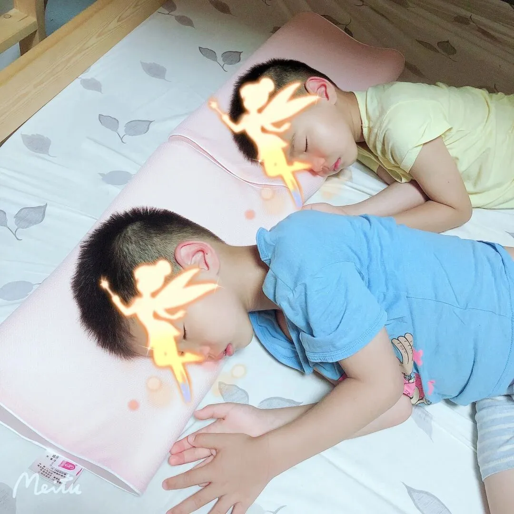
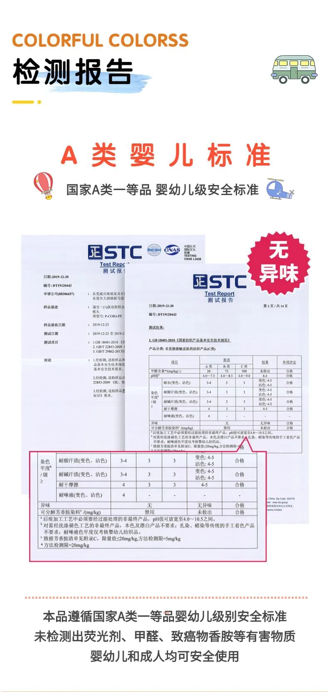
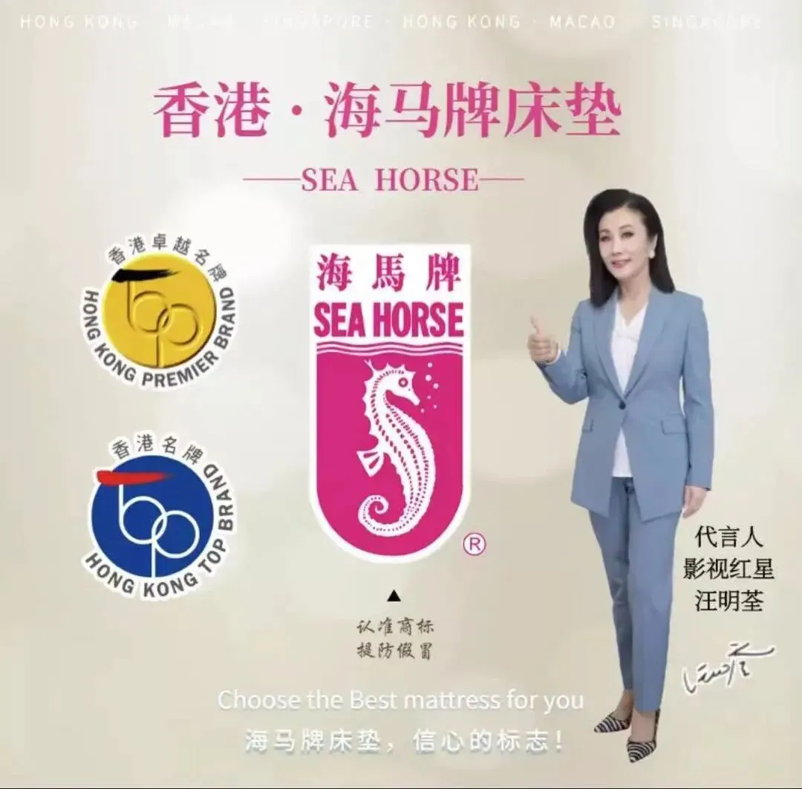
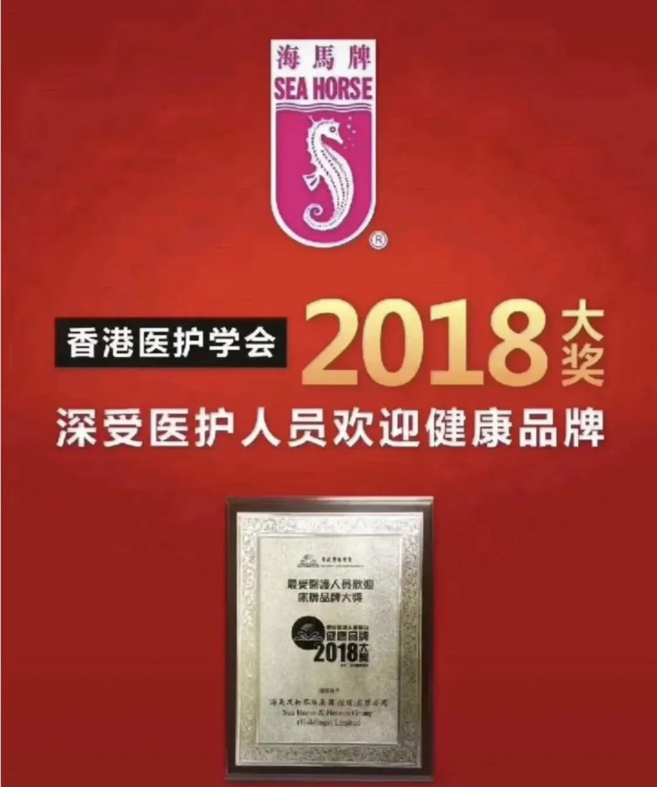
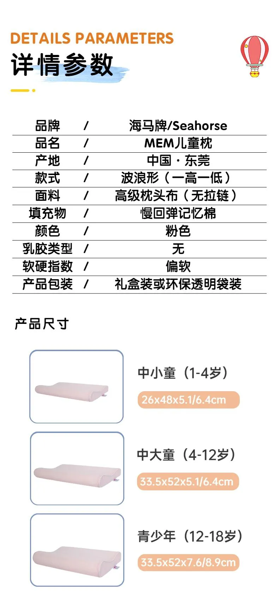
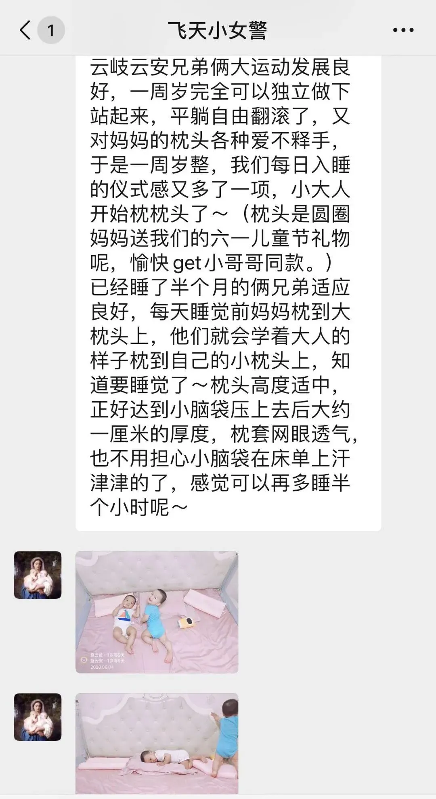
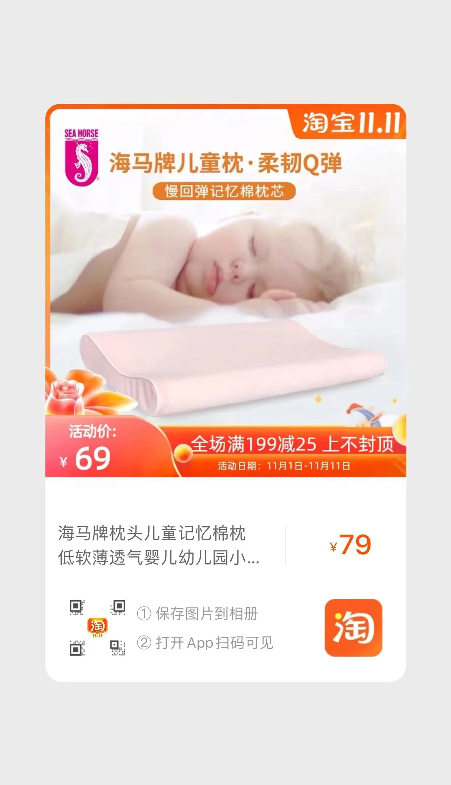